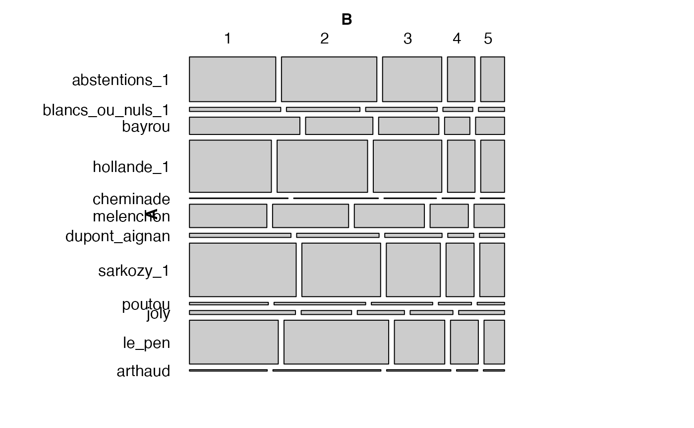

Résultats par département au premier tour des élections présidentielles françaises de 2012.
presid_2012
A data frame with 96 observations on the following 13 variables.
a factor with levels Ain
Aisne Allier Alpes-de-Haute-Provence
Alpes-Maritimes Ardèche Ardennes Ariège
Aube Aude Aveyron Bas-Rhin
Bouches-du-Rhône Calvados Cantal Charente
Charente-Maritime Cher Corrèze Corse-du-Sud
Côte-d'Or} \code{Côtes-d'Armor Creuse Deux-Sèvres
Dordogne Doubs Drôme Essonne Eure
Eure-et-Loir Finistère Gard Gers Gironde
Haut-Rhin Haute-Corse Haute-Garonne Haute-Loire
Haute-Marne Haute-Saône Haute-Savoie
Haute-Vienne Hautes-Alpes bM1akt5yfoAY2FDYE5aEXw6kSLbuubTG-44Hauts-de-Seine Hérault Ille-et-Vilaine Indre
Indre-et-Loire Isère Jura Landes
Loir-et-Cher Loire Loire-Atlantique Loiret
Lot Lot-et-Garonne Lozère Maine-et-Loire
Manche Marne Mayenne Meurthe-et-Moselle
Meuse Morbihan Moselle Nièvre Nord
Oise Orne Paris Pas-de-Calais Puy-de-Dôme
bM1akt5yfoAY2FDYE5aEXw6kSLbuubTG-75bM1akt5yfoAY2FDYE5aEXw6kSLbuubTG-76Rhône
Saône-et-Loire Sarthe Savoie Seine-et-Marne
Seine-Maritime Seine-Saint-Denis Somme Tarn
Tarn-et-Garonne Territoire_de_Belfort Val-dOise
Val-de-Marne Var Vaucluse Vendée Vienne
Vosges Yonne Yvelines. Nom du département (métropole) où les suffrages ont été dénombrés.
a numeric vector. Abstentions du 1er tour.
a numeric vector. Bulletins blancs ou nuls au 1er tour.
a numeric vector. Candidat Bayrou.
a numeric vector. Candidat Hollande au 1er tour.
a numeric vector. Candidat Cheminade.
a numeric vector. Candidat Mélenchon.
a numeric vector. Candidat Dupont-Aignan.
a numeric vector. Candidat Sarkozy au 1er tour.
a numeric vector. Candidat Poutou.
a numeric vector. Candidate Joly.
a numeric vector. Candidate Le Pen.
a numeric vector. Candidate Arthaud.
#> 'data.frame': 96 obs. of 13 variables: #> $ departement : Factor w/ 96 levels "Ain","Aisne",..: 1 2 3 4 43 5 6 7 8 9 ... #> $ abstentions_1 : int 65996 72928 45266 21034 18246 153383 38560 40508 18502 37939 ... #> $ blancs_ou_nuls_1: int 6453 5196 5059 2111 1842 9063 4073 2480 1820 3466 ... #> $ bayrou : int 32650 19895 17814 7483 8559 38980 18373 11551 6411 13575 ... #> $ hollande_1 : int 73096 80751 61131 24551 21248 111990 52156 44441 33003 36967 ... #> $ cheminade : int 860 738 457 283 212 1238 521 366 221 407 ... #> $ melenchon : int 30898 30360 27969 15269 12175 49493 28247 14260 16197 12860 ... #> $ dupont_aignan : int 7208 5853 4068 1845 1782 9241 3890 2787 1446 3524 ... #> $ sarkozy_1 : int 97722 72090 49477 25668 22655 216738 47687 37524 17979 49196 ... #> $ poutou : int 3323 3860 2584 1394 1152 4048 2750 1981 1396 1632 ... #> $ joly : int 7268 3455 3232 2933 3147 12556 5621 1868 2742 2294 ... #> $ le_pen : int 66540 78452 37736 20875 15359 136982 40216 37628 16125 40740 ... #> $ arthaud : int 1794 2490 1482 487 488 1576 1257 1185 528 990 ...#>vcd::mosaic(t(as.table(as.matrix(presid_2012[1:5,-1]))), rot_labels=c(0,90,0,0), just_labels = "right")